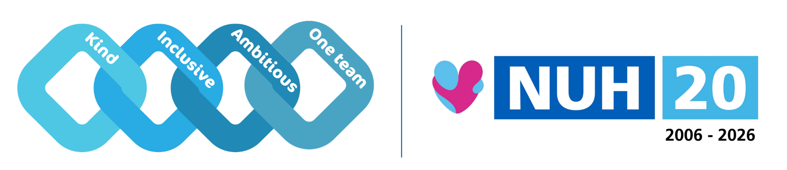
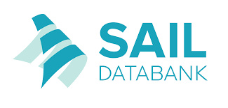
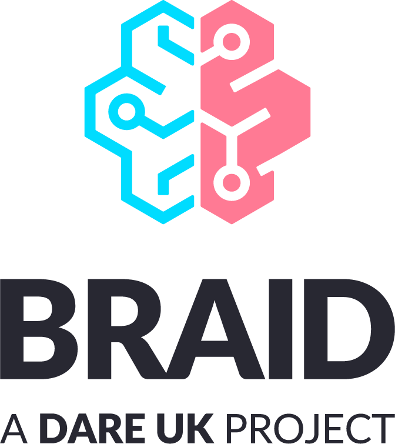

Partner Institutions



A multi-institutional project testing federated Trusted Research Environments to advance privacy-preserving, data-driven brain frailty research across the UK.

As we get older, or when we develop certain illnesses, our brain can experience gradual damage and become less resilient. This varies from person to person and may not cause noticeable symptoms at first, but it can increase the risk of poorer health outcomes. Researchers use the term "brain frailty" to describe the build-up of changes and damage in the brain that make a person more vulnerable to problems such as slower thinking, memory difficulties, dementia, stroke, and a reduced ability to recover from illness.
To better understand brain health and brain frailty, and ultimately use this knowledge to support personalised healthcare, researchers need access to large and diverse datasets. These datasets may include brain scans, medical records, genetic information, and details about a person's background and lifestyle. Because this information is highly sensitive, it cannot simply be shared between hospitals and research organisations. Instead, it is stored in secure platforms called Trusted Research Environments (TREs), where approved researchers can analyse the data without it leaving the secure system. New technologies are now making it possible to connect multiple TREs so that studies can be carried out across different organisations and countries. This approach, known as federated analysis, allows researchers to work together using larger and more diverse populations while protecting privacy and ensuring that data is handled securely and responsibly.
Federated analysis — running analyses across multiple TREs at once — increases research power while maintaining privacy. However, the readiness of the DARE-UK TREvolution project enabling federated TRE infrastructure to support complex neuroimaging workflows has not yet been fully realised.
BRAID will adapt existing analytics pipelines into TRE-ready workflows, using advanced analytical methods and machine-learning on brain data to identify early biomarkers of brain frailty and test how well federated TREs handle complex brain data analytics.
Alongside technical work, we run workshops and engagement activities to explore public views on privacy, data use, and federated technologies — ensuring our methods reflect public values and address societal concerns.
Identifying where improvements are needed will make the DARE-UK TREvolution technologies more reliable, scalable, and user-friendly — paving the way for a national framework for federated brain health research.

